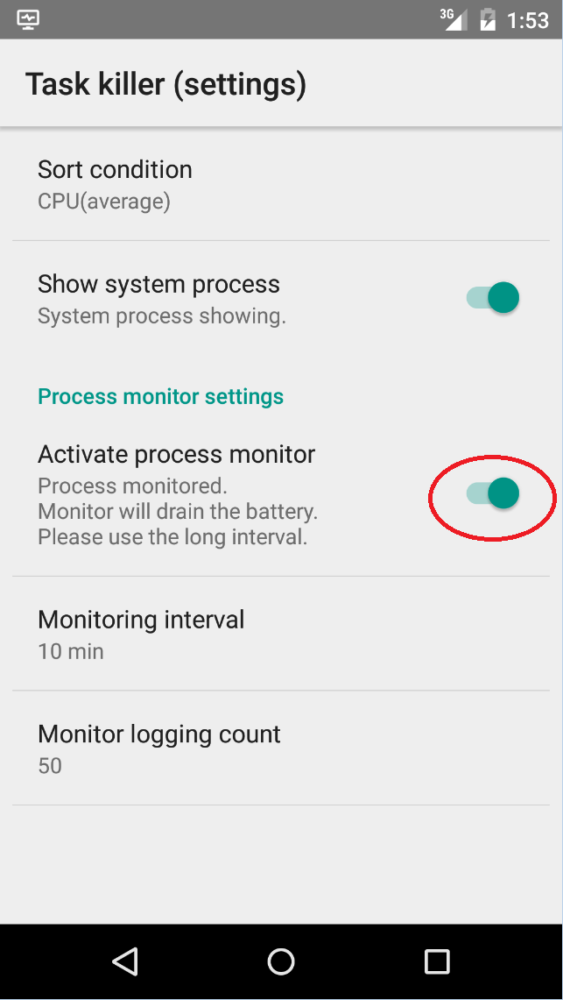

Task killer for screen off
このアプリはスクリーンオフ時に指定されたアプリを停止させます。
スリープ時の電池消耗を防ぐことを目的としています。
停止させるアプリの指定
アプリの一覧画面から右側のチェックを入れるだけです。
但し、アプリによっては
- 停止できないもの
- 停止しても自動的に再起動するもの
- 停止するとシステムに影響するもの
などが有りますので注意してください。
プロセス監視
不必要に稼働しているアプリを発見する為にプロセスの実行状況を監視する機能があります。
設定画面から「Activate process monitor」を有効にしてください。

注：プロセス監視はそれ自体が電池を消耗しますので必要がなければ無効にしてください。
プロセス監視を有効にするとアプリ一覧にCPU使用率のグラフが表示されます。
(グラフは10%以上は見切れます。)
「PROCESS」タブを表示するとシステムを含む全てのプロセスが表示されます。
グラフの読み方
通常は system_server プロセスが高い利用率を示しますがこれは
OS の共通機能で他のアプリから利用されるためです。
CPU使用率が低くても一定間隔で動作している常駐アプリは間接的に電池を消耗している可能性が有ります。
スリープ中はCPUが低速になるためCPU使用率が上がったように見えますが正常です。